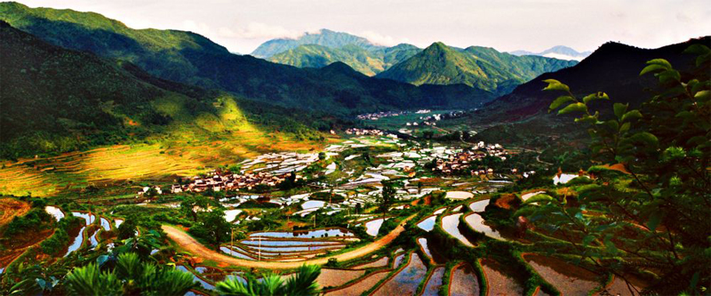
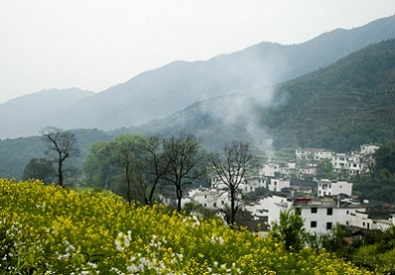
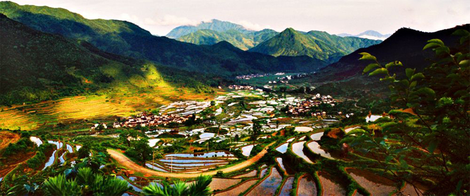
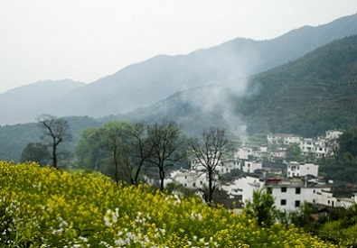

婺源景点-【江岭】


江岭南临晓起，东接溪头，地处婺源县最东北，是婺源最值得去的地方。 主要景点有：江岭风光，高山平湖，庆源古村。 那里漫山遍野的油菜花呈梯田状，从山顶铺散到山谷下。站在山顶望去，脚下大片的山谷内，油菜花层层叠叠，一望无际，中间围拢着几个小小的村落，黑瓦白墙的徽派民居夹杂在一片金黄之间，在婺源再没有比这更壮观而令人惊喜的了。每当油菜花季节，这里总吸引了无数摄影师和游客。


江岭南临晓起，东接溪头，地处婺源县最东北，是婺源最值得去的地方。 主要景点有：江岭风光，高山平湖，庆源古村。 那里漫山遍野的油菜花呈梯田状，从山顶铺散到山谷下。站在山顶望去，脚下大片的山谷内，油菜花层层叠叠，一望无际，中间围拢着几个小小的村落，黑瓦白墙的徽派民居夹杂在一片金黄之间，在婺源再没有比这更壮观而令人惊喜的了。每当油菜花季节，这里总吸引了无数摄影师和游客。